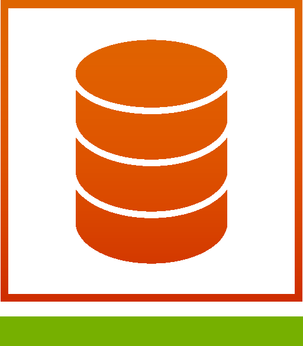
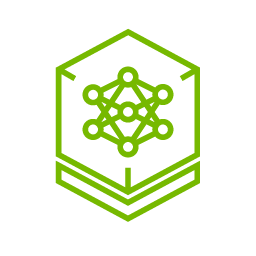
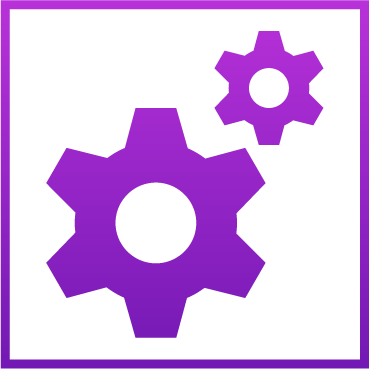
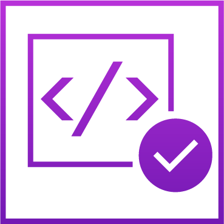
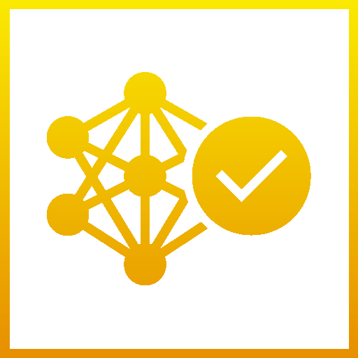

Nemotron / Post-training for healthcare
Practice across healthcare tasks.
NeMo Gym
Practice Environment

Requests, health context
& workflow goals
Hermes agent harness

Nemotron 3.5 Lightning

Clinical toolsProfiles · Refills · Scheduling
Simulated patient
Evaluation

Verifier
LLM judge
Rubric + reward

NeMo RL
GRPO
responsesPatient
repliesInteraction
tracesTrajectories + rewardsPolicy updates
The agent practices across different healthcare tasks.
Reward diligence in healthcare workflows
The request is complete. Were the right steps taken?
Recorded excerpts from simulated patients. Same held-out case specification; independently generated conversations. Baseline and GRPO step 75.
Separate held-out evaluation
Beyond a single conversation.
97 cases kept out of training. Selected clinical and workflow dimensions.
Nemotron 3.5 Lightning
Baseline GRPO step 75
Higher scores across task completion, safety, workflow, triage and helpfulness.
Simulated evaluation, not clinical validation. Step 75 matches the examples shown; it is an exploratory checkpoint, not the historically selected step 25.
Evaluation context
The chart shows five selected dimensions. The overall weighted average retains all six rubric dimensions, including Conversation (4.44 baseline; 3.95 at step 75), which declined. Same 97 case specifications and verifier, with independent patient conversations. This validation set was used to inspect checkpoints, so it is not an untouched final test. Baseline and trained checkpoint serving configurations differ. These results do not isolate the effect of training or establish superiority over other adaptation methods. No patient outcomes or DGX Station performance are measured here.
Source values and audit hashesFrom practice to your next step
Here's what you just saw, why it matters,
and where you can go next.
Practice and feedback target the steps that task completion alone can miss.
01 / Open models
Nemotron
Adapt an open model to your domain.
Explore Nemotron ↗Model on Hugging Face ↗02 / Practice + post-training
NeMo Gym + NeMo RL
Connect your environment, feedback and GRPO loop.
Connect Gym + RL ↗Nemotron GRPO reference recipe ↗NeMo RL on GitHub ↗03 / Post-training platform
DGX Station

A platform for local model development.
Explore DGX Station ↗DGX Station playbooks ↗Adapt the reference recipe to your model and compute. It is not a verified healthcare or DGX Station recipe; recorded demo results are not a DGX Station benchmark.